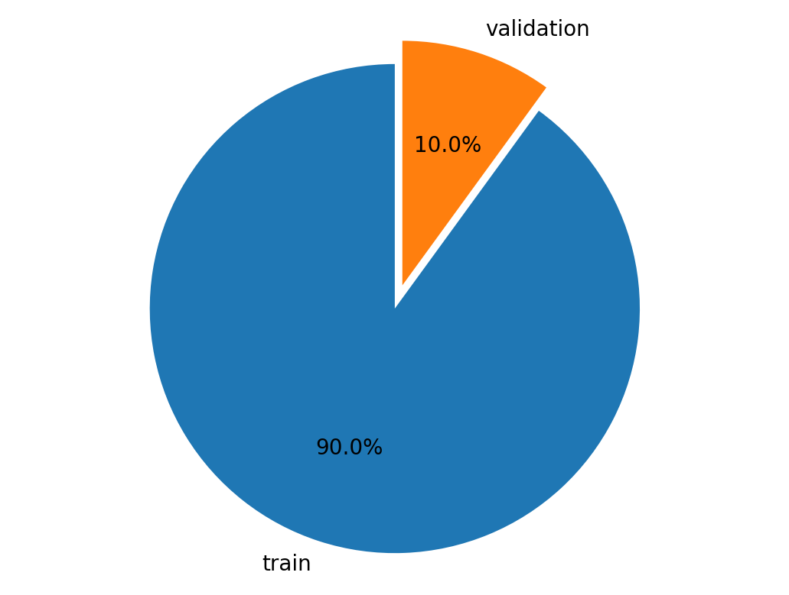

import boto3
import sagemaker
import pandas as pd
import numpy as np
import botocore
config = botocore.config.Config(user_agent_extra='dlai-pds/c1/w4')
# low-level service client of the boto3 session
sm = boto3.client(service_name='sagemaker',
config=config)
sm_runtime = boto3.client('sagemaker-runtime',
config=config)
sess = sagemaker.Session(sagemaker_client=sm,
sagemaker_runtime_client=sm_runtime)
bucket = sess.default_bucket()
role = sagemaker.get_execution_role()
region = sess.boto_region_name1 Introduction
In earlier articles we introduced AWS cloud services for data science, and showed how it could help with different stages of the data science & machine learning workflow.

In this article we will use the AWS SageMaker BlazingText built-in deep learning model to predict the sentiment for customer text reviews. The model will analyze customer feedback and classify the messages into positive (1), neutral (0) and negative (-1) sentiment.
The dataset we will use is the Women’s Clothing Reviews a public dataset available on kaggle.
In my previous article we saw how you could use AWS Sagemaker Autopilot (an AutoML method) to automatically choose an appropriate model and perform all the required steps of the Data Science workflow.
But sometimes, we may need to go beyond AutoML and do more customisation and human selection for the Data Science workflow, and even between AutoML and fully customised Models, there are a range of choices in between for example from most to least automated methods we could have:
- AWS Sagemaker Autopilot (AutoML)
- AWS Sagemaker Built-in Algorithms
- AWS Sagemaker Bring your own script (import and define your own models)
- AWS Sagemaker Bring your own container (i.e. docker image with models & environment)

And of course, there are various pros and cons for each of the options for most automated to most customised.
So when would we use built-in algorithms? What would be the advantages for this?
- Implementations are highly-optimized and scalable
- Focus more on domain-specific tasks rather than managing low-level model code and infrastructure
- Trained model can be downloaded and re-used elsewhere
So as mentioned previously we will be using the BlazingText built in deep learning language model. BlazingText is a variant of FastText which is based on word2vec created by the AWS team in 2017.

Key aspects of BlazingText are:
- Scales and accelerates Word2Vec using multiple CPUs or GPUs for training
- Extends FastText to use GPU acceleration with custom CUDA kernels
- Creates n-gram embeddings using CBOW and skip-gram
- Saves money by early-stopping a training job when the validation accuracy stops increasing
- Optimized I/O for datasets stored in Amazon S3
For more information on BlazingText, see the documentation here: https://docs.aws.amazon.com/sagemaker/latest/dg/blazingtext.html
Let’s now install and import the required modules.
import matplotlib.pyplot as plt
%matplotlib inline
%config InlineBackend.figure_format='retina'2 Prepare dataset
Let’s adapt the dataset into a format that BlazingText understands. The BlazingText format is as follows:
__label__<label> "<features>"Here are some examples:
__label__-1 "this is bad"
__label__0 "this is ok"
__label__1 "this is great"Sentiment is one of three classes: negative (-1), neutral (0), or positive (1). BlazingText requires that __label__ is prepended to each sentiment value.
We will tokenize the review_body with the Natural Language Toolkit (nltk) for the model training. We will also use nltk later to tokenize reviews to use as inputs to the deployed model.
2.1 Load the dataset
Upload the dataset into the Pandas dataframe:
!aws s3 cp 's3://dlai-practical-data-science/data/balanced/womens_clothing_ecommerce_reviews_balanced.csv' ./download: s3://dlai-practical-data-science/data/balanced/womens_clothing_ecommerce_reviews_balanced.csv to ./womens_clothing_ecommerce_reviews_balanced.csvpath = './womens_clothing_ecommerce_reviews_balanced.csv'
df = pd.read_csv(path, delimiter=',')
df.head()| sentiment | review_body | product_category | |
|---|---|---|---|
| 0 | -1 | This suit did nothing for me. the top has zero... | Swim |
| 1 | -1 | Like other reviewers i saw this dress on the ... | Dresses |
| 2 | -1 | I wish i had read the reviews before purchasin... | Knits |
| 3 | -1 | I ordered these pants in my usual size (xl) an... | Legwear |
| 4 | -1 | I noticed this top on one of the sales associa... | Knits |
2.2 Transform the dataset
Now we will prepend __label__ to each sentiment value and tokenize the review body using nltk module. Let’s import the module and download the tokenizer:
import nltk
nltk.download('punkt')[nltk_data] Downloading package punkt to /root/nltk_data...
[nltk_data] Unzipping tokenizers/punkt.zip.TrueTo split a sentence into tokens we can use word_tokenize method. It will separate words, punctuation, and apply some stemming.
For example:
sentence = "I'm not a fan of this product!"
tokens = nltk.word_tokenize(sentence)
print(tokens)['I', "'m", 'not', 'a', 'fan', 'of', 'this', 'product', '!']The output of word tokenization can be converted into a string separated by spaces and saved in the dataframe. The transformed sentences are prepared then for better text understending by the model.
Let’s define a prepare_data function which we will apply later to transform both training and validation datasets.
def tokenize(review):
# delete commas and quotation marks, apply tokenization and join back into a string separating by spaces
return ' '.join([str(token) for token in nltk.word_tokenize(str(review).replace(',', '').replace('"', '').lower())])
def prepare_data(df):
df['sentiment'] = df['sentiment'].map(lambda sentiment : '__label__{}'.format(str(sentiment).replace('__label__', '')))
df['review_body'] = df['review_body'].map(lambda review : tokenize(review))
return dfTest the prepared function and examine the result.
# create a sample dataframe
df_example = pd.DataFrame({
'sentiment':[-1, 0, 1],
'review_body':[
"I don't like this product!",
"this product is ok",
"I do like this product!"]
})
# test the prepare_data function
print(prepare_data(df_example)) sentiment review_body
0 __label__-1 i do n't like this product !
1 __label__0 this product is ok
2 __label__1 i do like this product !Let’s apply the prepare_data function to the dataset.
df_blazingtext = df[['sentiment', 'review_body']].reset_index(drop=True)
df_blazingtext = prepare_data(df_blazingtext)
df_blazingtext.head()| sentiment | review_body | |
|---|---|---|
| 0 | __label__-1 | this suit did nothing for me . the top has zer... |
| 1 | __label__-1 | like other reviewers i saw this dress on the c... |
| 2 | __label__-1 | i wish i had read the reviews before purchasin... |
| 3 | __label__-1 | i ordered these pants in my usual size ( xl ) ... |
| 4 | __label__-1 | i noticed this top on one of the sales associa... |
2.3 Split the dataset into train and validation sets
We will now split and visualize a pie chart of the train (90%) and validation (10%) sets.
from sklearn.model_selection import train_test_split
# Split all data into 90% train and 10% holdout
df_train, df_validation = train_test_split(df_blazingtext,
test_size=0.10,
stratify=df_blazingtext['sentiment'])
labels = ['train', 'validation']
sizes = [len(df_train.index), len(df_validation.index)]
explode = (0.1, 0)
fig1, ax1 = plt.subplots()
ax1.pie(sizes, explode=explode, labels=labels, autopct='%1.1f%%', startangle=90)
# Equal aspect ratio ensures that pie is drawn as a circle.
ax1.axis('equal')
plt.show()
print(len(df_train))
6399Save the results as CSV files.
blazingtext_train_path = './train.csv'
df_train[['sentiment', 'review_body']].to_csv(blazingtext_train_path, index=False, header=False, sep=' ')blazingtext_validation_path = './validation.csv'
df_validation[['sentiment', 'review_body']].to_csv(blazingtext_validation_path, index=False, header=False, sep=' ')2.4 Upload the train and validation datasets to S3 bucket
We will use these to train and validate your model. Let’s save them to S3 bucket.
train_s3_uri = sess.upload_data(bucket=bucket, key_prefix='blazingtext/data', path=blazingtext_train_path)
validation_s3_uri = sess.upload_data(bucket=bucket, key_prefix='blazingtext/data', path=blazingtext_validation_path)3 Train the model
We will now setup the BlazingText estimator. For more information on Estimators, see the SageMaker Python SDK documentation here: https://sagemaker.readthedocs.io/.
We will setup the container image to use for training with the BlazingText algorithm.
image_uri = sagemaker.image_uris.retrieve(
region=region,
framework='blazingtext'
)Let’s now create an estimator instance passing the container image and other instance parameters.
estimator = sagemaker.estimator.Estimator(
image_uri=image_uri,
role=role,
instance_count=1,
instance_type='ml.m5.large',
volume_size=30,
max_run=7200,
sagemaker_session=sess
)Now we need to configure the hyper-parameters for BlazingText. In our case we are using BlazingText for a supervised classification task.
Information on the hyper-parameters can be found in the documentation here: https://docs.aws.amazon.com/sagemaker/latest/dg/blazingtext-tuning.html
The hyperparameters that have the greatest impact on word2vec objective metrics are: learning_rate and vector_dim.
estimator.set_hyperparameters(mode='supervised', # supervised (text classification)
epochs=10, # number of complete passes through the dataset: 5 - 15
learning_rate=0.01, # step size for the numerical optimizer: 0.005 - 0.01
min_count=2, # discard words that appear less than this number: 0 - 100
vector_dim=300, # number of dimensions in vector space: 32-300
word_ngrams=3) # number of words in a word n-gram: 1 - 3To call the fit method for the created estimator instance we need to setup the input data channels. This can be organized as a dictionary
data_channels = {
'train': ..., # training data
'validation': ... # validation data
}where training and validation data are the Amazon SageMaker channels for S3 input data sources.
Let’s create a train data channel.
train_data = sagemaker.inputs.TrainingInput(
train_s3_uri,
distribution='FullyReplicated',
content_type='text/plain',
s3_data_type='S3Prefix'
)Let’s create a validation data channel.
validation_data = sagemaker.inputs.TrainingInput(
validation_s3_uri,
distribution='FullyReplicated',
content_type='text/plain',
s3_data_type='S3Prefix'
)Let’s now organize the data channels defined above as a dictionary.
data_channels = {
'train': train_data,
'validation': validation_data
}We will now start fitting the model to the dataset.
To do this we call the fit method of the estimator passing the configured train and validation inputs (data channels).
estimator.fit(
inputs=..., # train and validation input
wait=False # do not wait for the job to complete before continuing
)estimator.fit(
inputs=data_channels,
wait=False
)
training_job_name = estimator.latest_training_job.name
print('Training Job Name: {}'.format(training_job_name))Training Job Name: blazingtext-2023-02-06-12-48-14-823Let’s setup a watcher while we wait for the training job to complete.
%%time
estimator.latest_training_job.wait(logs=False)
2023-02-06 12:48:16 Starting - Starting the training job.........
2023-02-06 12:49:15 Starting - Preparing the instances for training..
2023-02-06 12:49:30 Downloading - Downloading input data.......
2023-02-06 12:50:10 Training - Downloading the training image..
2023-02-06 12:50:26 Training - Training image download completed. Training in progress.......
2023-02-06 12:51:02 Uploading - Uploading generated training model....................................................................
2023-02-06 12:56:53 Completed - Training job completed
CPU times: user 470 ms, sys: 76.5 ms, total: 547 ms
Wall time: 8min 28sLet’s now review the train and validation accuracy.
estimator.training_job_analytics.dataframe()Warning: No metrics called train:mean_rho found| timestamp | metric_name | value | |
|---|---|---|---|
| 0 | 0.0 | train:accuracy | 0.5456 |
| 1 | 0.0 | validation:accuracy | 0.5021 |
4 Deploy the model
Now lets deploy the trained model as an Endpoint.
%%time
text_classifier = estimator.deploy(initial_instance_count=1,
instance_type='ml.m5.large',
serializer=sagemaker.serializers.JSONSerializer(),
deserializer=sagemaker.deserializers.JSONDeserializer())
print()
print('Endpoint name: {}'.format(text_classifier.endpoint_name))-----!
Endpoint name: blazingtext-2023-02-06-12-56-55-806
CPU times: user 124 ms, sys: 4.38 ms, total: 128 ms
Wall time: 2min 32s5 Test the model
Let’s now test the model to see if it makes reasonable predictions.
We need to import the nltk library to convert the raw reviews into tokens that BlazingText recognizes.
import nltk
nltk.download('punkt')[nltk_data] Downloading package punkt to /root/nltk_data...
[nltk_data] Package punkt is already up-to-date!TrueThen we need to specify sample reviews to predict the sentiment.
reviews = ['This product is great!',
'OK, but not great',
'This is not the right product.'] Next we tokenize the reviews and specify the payload to use when calling the REST API.
tokenized_reviews = [' '.join(nltk.word_tokenize(review)) for review in reviews]
payload = {"instances" : tokenized_reviews}
print(payload){'instances': ['This product is great !', 'OK , but not great', 'This is not the right product .']}Now we can predict the sentiment for each review. Calling the predict method of the text classifier passing the tokenized sentence instances (payload) into the data argument.
predictions = text_classifier.predict(data=payload)
for prediction in predictions:
print('Predicted class: {}'.format(prediction['label'][0].lstrip('__label__')))Predicted class: 1
Predicted class: -1
Predicted class: -16 Acknowledgements
I’d like to express my thanks to the great Deep Learning AI Practical Data Science on AWS Specialisation Course which i completed, and acknowledge the use of some images and other materials from the training course in this article.